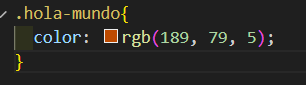
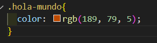
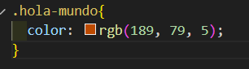

Tecnologías que manejo
Frontend
 

soy una persona creativa y tengo un buen manejo del estrés, uno de mis pasatiempos es hacer ejercicios
Soy aprendiz de desarollo de software en el Sena antes de incribirme trabajaba en una empresa pequeña en la cual me tocaba atender a los clientes hasta que quise ganar conocimiento sobre el desarrollo de software el cual me interesaba por lo tanto me inscribi en el Sena en el transcurso de ese tiempo e estado trabajando y me e metido en unos cursos pequeños sobre html y css en los cuales en ganado un poco de conocimiento
